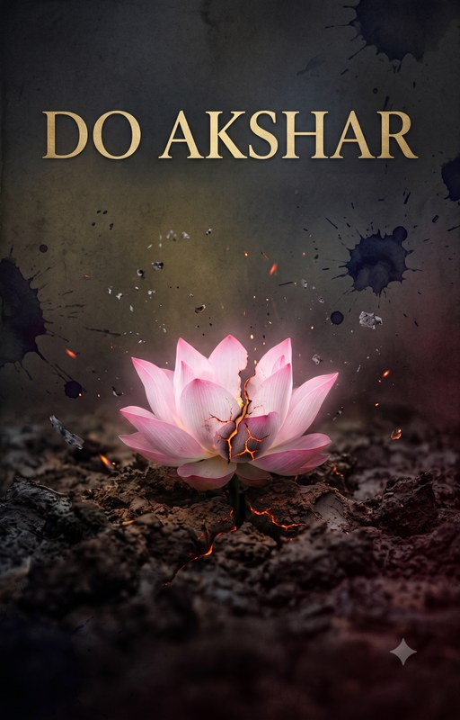

Do Akshar
Pyaar — do akshar, do log, do jeevan… ek anth.
Not a love story. The story of what love leaves behind
Read on WattpadHum pyaar kar sakte hain… par wo raasta toh samay khud likhta hai.
Karthik Kumar is a farmer’s son. Simple. Silent. Brilliant. A boy who never asked for much, just enough to lift his family out of the fields and into something better. He had no friends, no distractions, no dreams for himself. His family was his dream. Disciplined to the bone, carrying the weight of every hope his mother, father and sister placed quietly on his shoulders, he studied, and studied, and studied. Until she came.
Ahaana Singhania is the only daughter of one of the most powerful political families in the region. Born into privilege, raised in shadows. She had everything except freedom. Except something real. When she found it, she held on with everything she had. Persistent. Genuine. Fearless in love, if nothing else.
When these two worlds collided, a lotus rising from mud met a dynasty drowning in its own power. Karthik never wanted to fall in love; his family’s survival depended on his focus. But Ahaana was not a distraction. She was a storm that arrived quietly, persistently, until the boy who had built walls around everything he was let her in. What followed was real. Rare. The kind of love that doesn’t announce itself loudly but roots itself so deep it changes the shape of a person.
And then, in one moment, everything shattered. Not slowly. Not with warning. One moment. One lie. One decision made in fear that neither of them could take back.
Do Akshar is the story of two people who loved each other completely, and were destroyed not by that love, but by the world that surrounded it. A family’s sacrifice, a dynasty’s cruelty, and a silence that lasted years. A boy who lost everything and rebuilt himself from nothing, not for glory, not for recognition, but because something inside him refused to die.
It asks the questions no love story dares to ask. Is love enough when family is at stake? Is protecting someone the same as standing for them? When heart and mind go to war, who pays the price of that battle? And when justice finally arrives, does it feel like victory? Or just like the quietest kind of grief?
This is not a story of enemies becoming lovers. This is the story of lovers who became something far more complicated than enemies.
Meet them
- Karthik Kumar. A farmer’s son. Simple, silent, brilliant. Lost everything and rebuilt himself from nothing.
- Ahaana Singhania. A political dynasty’s only daughter. Born into privilege, raised in shadows, fearless in love.
Two letters. Two people. Two lives. Lived separately. Ended the same way. Do Akshar will not give you a happy ending. It will give you something rarer: the truth.